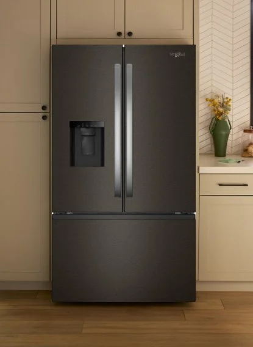
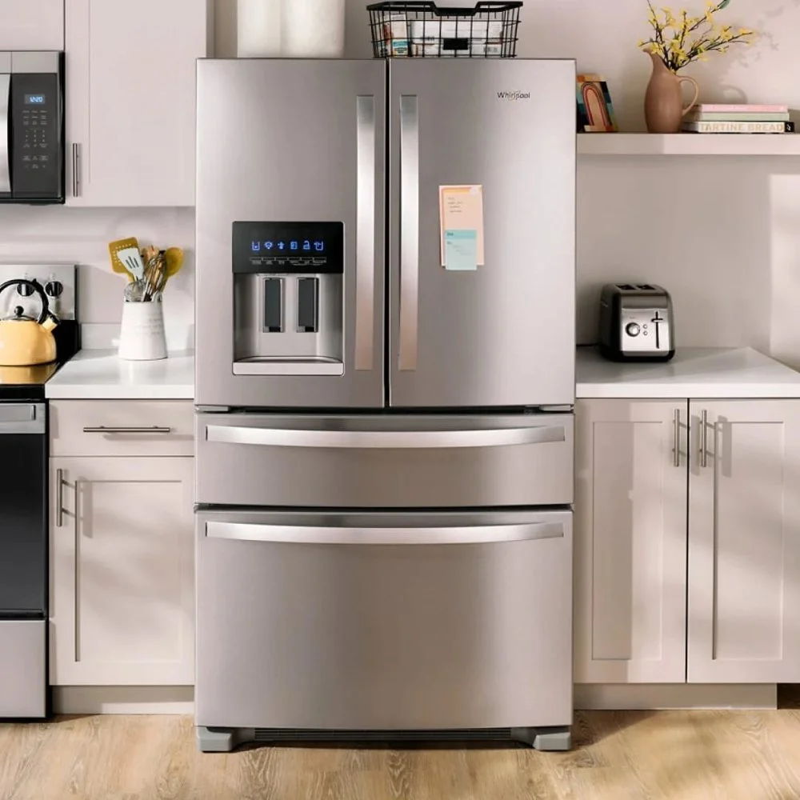
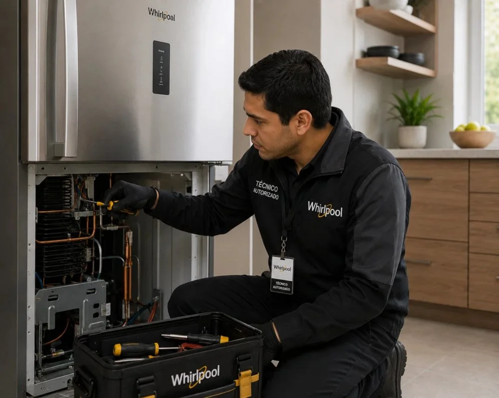
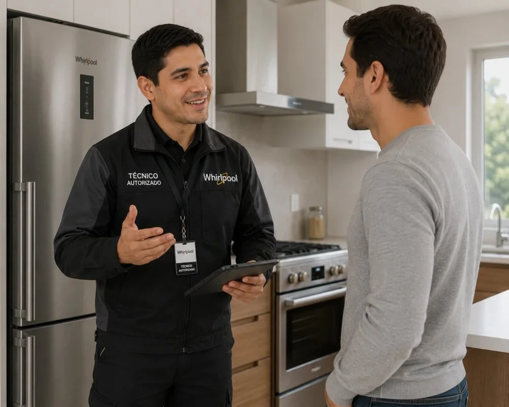
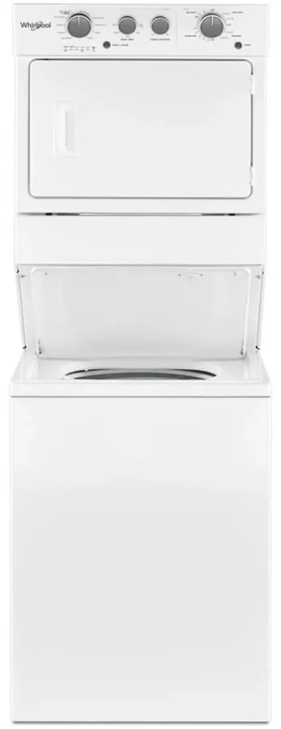

Servicio técnico Whirlpool urgente en Panamá
Si tu nevera dejó de enfriar o tu lavadora gotea, escríbenos de inmediato: priorizamos las fallas urgentes y coordinamos visitas en 24 a 48 horas.

Qué fallas son urgentes
Nevera que no enfría o se apaga y prende sola, lavadora que gotea o inunda, equipos que saltan el breaker o huelen a quemado. En esos casos desconecta el equipo y escríbenos.
Mientras llega el técnico
En la nevera, evita abrir la puerta para conservar el frío. En la lavadora, cierra la llave de agua y desconecta. En secadoras, apaga y desconecta si hay olor a quemado.
Cómo pedir una visita urgente
Escríbenos por WhatsApp al +507 6933-7976 con tu zona, el equipo y el síntoma. Te confirmamos la disponibilidad más cercana.
Servicio técnico Whirlpool: neveras, lavadoras y secadoras
Atendemos neveras y refrigeradoras, lavadoras de carga superior y frontal, y secadoras Whirlpool. Cada visita incluye diagnóstico, explicación de la falla, costo claro y garantía.
Cobertura en Ciudad de Panamá, San Miguelito y Panamá Oeste
Visitamos San Francisco, Bella Vista, Obarrio, Marbella, Costa del Este, Punta Pacífica, Paitilla, Betania, Albrook, Clayton, Arraiján, La Chorrera y más zonas. Consulta la lista completa en la página de cobertura.
Equipos Whirlpool que atendemos


Neveras y Refrigeradoras
Reparamos neveras y refrigeradoras Whirlpool a domicilio en Ciudad de Panamá: de dos puertas (Side by Side), French…
Ver servicio →
Lavadoras
Reparamos lavadoras Whirlpool de carga superior y de carga frontal a domicilio en Ciudad de Panamá: no centrifugan, no…
Ver servicio →

Secadoras
Reparamos secadoras Whirlpool eléctricas y de gas a domicilio en Ciudad de Panamá: no secan, no calientan, hacen ruido,…
Ver servicio →Preguntas frecuentes
¿Atienden emergencias?
Priorizamos las fallas urgentes; la disponibilidad se confirma por WhatsApp según tu zona.
¿Atienden fines de semana?
Trabajamos de lunes a sábado de 7:00am a 6:00pm.
Búsquedas relacionadas
¿Necesitas servicio técnico Whirlpool en Panamá?
Escríbenos por WhatsApp con el equipo, el modelo y la falla. Te confirmamos disponibilidad para tu zona en minutos.